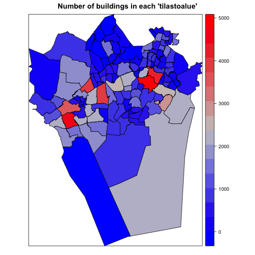

helsinki v0.9.24
Tools for accessing various open data sources in the Helsinkiregion in Finland. Current data sources includethe Real Estate Department (district maps)the Environmental Services AuthorityService Map APILinked Events API andHelsinki Region Infoshare statistics API.
helsinki - tutorial
This R package provides tools to access open data from the Helsinki region in Finland as part of the rOpenGov project.
For contact information and source code, see the github page.
Available data sources
Helsinki region district maps (Helsingin seudun aluejakokartat)
- Aluejakokartat: kunta, pien-, suur-, tilastoalueet (Helsinki region district maps)
- Äänestysaluejako: (Helsinki region election district maps)
- Source: Helsingin kaupungin Kiinteistövirasto (HKK)
Helsinki Real Estate Department (HKK:n avointa dataa)
- Spatial data from Helsingin kaupungin Kiinteistövirasto (HKK) availabe in the gisfin package, see gisfin tutorial for examples
Helsinki region environmental services (HSY:n avointa dataa)
- Väestötietoruudukko (population grid)
- Rakennustietoruudukko (building information grid)
- SeutuRAMAVA (building land resource information(?))
- Source: Helsingin seudun ympäristöpalvelut, HSY
- Helsinki region Service Map API (Pääkaupunkiseudun Palvelukartta)
- Helsinki Linked Event API
Helsinki Region Infoshare statistics API
- Aluesarjat (original source) (regional time series data)
- Source: Helsinki Region Infoshare statistics API
List of potential data sources to be added to the package can be found here.
Installation
Release version for general users:
install.packages("helsinki")Development version for developers:
install.packages("devtools")
library(devtools)
install_github("helsinki", "ropengov")Load package.
library(helsinki)Helsinki region district maps
Helsinki region district maps (Helsingin seudun aluejakokartat) and election maps (äänestysalueet) from Helsingin kaupungin Kiinteistövirasto (HKK) are available in the helsinki package with data(aluejakokartat). The data are available as both spatial object (sp) and data frame (df). These are preprocessed in the gisfin package, and more examples can be found in the gisfin tutorial.
# Load aluejakokartat and study contents
data(aluejakokartat)
str(aluejakokartat, m=2)## List of 2
## $ sp:List of 8
## ..$ kunta :Formal class 'SpatialPolygonsDataFrame' [package "sp"] with 5 slots
## ..$ pienalue :Formal class 'SpatialPolygonsDataFrame' [package "sp"] with 5 slots
## ..$ pienalue_piste :Formal class 'SpatialPointsDataFrame' [package "sp"] with 5 slots
## ..$ suuralue :Formal class 'SpatialPolygonsDataFrame' [package "sp"] with 5 slots
## ..$ suuralue_piste :Formal class 'SpatialPointsDataFrame' [package "sp"] with 5 slots
## ..$ tilastoalue :Formal class 'SpatialPolygonsDataFrame' [package "sp"] with 5 slots
## ..$ tilastoalue_piste:Formal class 'SpatialPointsDataFrame' [package "sp"] with 5 slots
## ..$ aanestysalue :Formal class 'SpatialPolygonsDataFrame' [package "sp"] with 5 slots
## $ df:List of 8
## ..$ kunta :'data.frame': 1664 obs. of 7 variables:
## ..$ pienalue :'data.frame': 33594 obs. of 7 variables:
## ..$ pienalue_piste :'data.frame': 295 obs. of 3 variables:
## ..$ suuralue :'data.frame': 6873 obs. of 7 variables:
## ..$ suuralue_piste :'data.frame': 23 obs. of 3 variables:
## ..$ tilastoalue :'data.frame': 17279 obs. of 7 variables:
## ..$ tilastoalue_piste:'data.frame': 125 obs. of 3 variables:
## ..$ aanestysalue :'data.frame': 35349 obs. of 11 variables:Helsinki region environmental services
Retrieve data from Helsingin seudun ympäristöpalvelut (HSY) with get_hsy().
Population grid
Population grid (väestötietoruudukko) with 250m x 250m grid size in year 2013 contains the number of people in different age groups. The most rarely populated grids are left out (0-4 persons), and grids with less than 99 persons are censored with ‘99’ to guarantee privacy.
sp.vaesto <- get_hsy(which.data="Vaestotietoruudukko", which.year=2013)
head(sp.vaesto@data)## INDEX ASUKKAITA ASVALJYYS IKA0_9 IKA10_19 IKA20_29 IKA30_39 IKA40_49
## 0 688 5 50 99 99 99 99 99
## 1 703 6 42 99 99 99 99 99
## 2 710 7 36 99 99 99 99 99
## 3 711 7 64 99 99 99 99 99
## 4 715 16 28 99 99 99 99 99
## 5 864 10 65 99 99 99 99 99
## IKA50_59 IKA60_69 IKA70_79 IKA_YLI80
## 0 99 99 99 99
## 1 99 99 99 99
## 2 99 99 99 99
## 3 99 99 99 99
## 4 99 99 99 99
## 5 99 99 99 99Helsinki building information
Building information grid (rakennustietoruudukko) in Helsinki region on grid-level (500m x 500m): building counts (lukumäärä), built area (kerrosala), usage (käyttötarkoitus), and region efficiency (aluetehokkuus).
sp.rakennus <- get_hsy(which.data="Rakennustietoruudukko", which.year=2013)
head(sp.rakennus@data)## INDEX RAKLKM RAKLKM_AS RAKLKM_MUU KERALA_YHT KERALA_AS KERALA_MUU
## 0 688 3 2 1 324 282 42
## 1 691 3 2 1 90 80 10
## 2 692 9 4 5 286 206 80
## 3 702 2 2 0 262 262 0
## 4 703 3 2 1 373 326 47
## 5 710 6 2 4 370 302 68
## KATAKER1 KATAKER2 KATAKER3 SUMMA1 SUMMA2 SUMMA3 ALUETEHOK
## 0 11 941 999999999 282 42 999999999 0.005288
## 1 41 941 999999999 80 10 999999999 0.001440
## 2 41 941 931 206 47 33 0.007304
## 3 11 999999999 999999999 262 999999999 999999999 0.004192
## 4 11 941 999999999 326 47 999999999 0.005968
## 5 11 931 941 302 39 29 0.005920
## KATAKER1.description KATAKER2.description KATAKER3.description
## 0 Yhden asunnon talot Talousrakennukset Puuttuvan tiedon merkki
## 1 Vapaa-ajan asunnot Talousrakennukset Puuttuvan tiedon merkki
## 2 Vapaa-ajan asunnot Talousrakennukset Saunarakennukset
## 3 Yhden asunnon talot Puuttuvan tiedon merkki Puuttuvan tiedon merkki
## 4 Yhden asunnon talot Talousrakennukset Puuttuvan tiedon merkki
## 5 Yhden asunnon talot Saunarakennukset TalousrakennuksetHelsinki building area capacity
Building area capacity per municipal region (kaupunginosittain summattua tietoa rakennusmaavarannosta). Plot with number of buildlings with spplot().
sp.ramava <- get_hsy(which.data="SeutuRAMAVA_tila", which.year=2013)
head(sp.ramava@data)## KUNTA KOKOTUN TILANRO NIMI RAKLKM YKSLKM RAKEOIKEUS
## 0 049 0491013000 013 KILO-KARAKALLIO 2245 915 1871538
## 1 235 2351003000 003 <NA> 326 214 218052
## 2 049 0495051000 051 KANTA-KAUKLAHTI 952 396 321345
## 3 092 0926081000 081 KORSO 1511 965 519438
## 4 092 0927096000 096 ITÄ-HAKKILA 994 687 278428
## 5 049 0491014000 014 LAAKSOLAHTI 3749 1998 807561
## KARA_YHT KARA_AS KARA_MUU RAKERA_YHT RAKERA_AS RAKERA_MUU VARA_YHT
## 0 1225666 607609 618057 40653 22814 17839 646923
## 1 171017 103585 67432 7411 6206 1205 47053
## 2 195116 144274 50842 41179 34061 7118 98379
## 3 419911 334123 85788 3963 3355 608 98692
## 4 193025 127626 65399 2067 1720 347 77453
## 5 600636 547178 53458 33286 29987 3299 174097
## VARA_AS VARA_AP VARA_AK VARA_MUU VANHINRAKE UUSINRAKE OMLAJI_1
## 0 93878 68728 25150 553045 1900 2013 11
## 1 42653 40606 2047 4400 1907 2013 11
## 2 76698 72958 3740 21681 1900 2013 3
## 3 59018 54779 4239 39674 1890 2013 9
## 4 22339 22339 0 55114 1900 2013 9
## 5 135184 130252 4932 38913 1870 2013 9
## OMLAJI_1S OMLAJI_2 OMLAJI_2S
## 0 Asunto-osakeyhtiö tai asunto-o 11 Asunto-osakeyhtiö tai asunto-o
## 1 Asunto-osakeyhtiö tai asunto-o 11 Asunto-osakeyhtiö tai asunto-o
## 2 Espoo 3 Espoo
## 3 Muu yksityinen henkilö 9 Muu yksityinen henkilö
## 4 Muu yksityinen henkilö 9 Muu yksityinen henkilö
## 5 Muu yksityinen henkilö 9 Muu yksityinen henkilö
## OMLAJI_3 OMLAJI_3S
## 0 11 Asunto-osakeyhtiö tai asunto-o
## 1 11 Asunto-osakeyhtiö tai asunto-o
## 2 3 Espoo
## 3 9 Muu yksityinen henkilö
## 4 9 Muu yksityinen henkilö
## 5 9 Muu yksityinen henkilö# Values with less than five units are given as 999999999, set those to zero
sp.ramava@data[sp.ramava@data==999999999] <- 0
# Plot number of buildings for each region
spplot(sp.ramava, zcol="RAKLKM", main="Number of buildings in each 'tilastoalue'", col.regions=colorRampPalette(c('blue', 'gray80', 'red'))(100))
Service and event information
Function get_servicemap() retrieves regional service data from the new Service Map API, that contains data from the Service Map.
# Search for "puisto" (park) (specify q="query")
search.puisto <- get_servicemap(query="search", q="puisto")
# Study results
str(search.puisto, m=1)## List of 4
## $ count : num 1662
## $ next : chr "http://api.hel.fi/servicemap/v1/search/?q=puisto&page=2"
## $ previous: NULL
## $ results :List of 20# A lot of results found (count > 1000)
# Get names for the first 20 results
sapply(search.puisto$results, function(x) x$name$fi)## [1] "Mankkaan asukaspuisto"
## [2] "Tapiolan asukaspuisto"
## [3] "Olarin asukaspuisto"
## [4] "Perkkaan asukaspuisto"
## [5] "Hurtigin puisto"
## [6] "Kaupungintalon puisto"
## [7] "Matinkylän asukaspuisto"
## [8] "Kylätalo Palttinan asukaspuisto"
## [9] "Leppävaaran asukaspuisto"
## [10] "Karakallion asukaspuisto"
## [11] "Suvelan asukaspuisto"
## [12] "Asematien puisto"
## [13] "Viherkallion asukaspuisto"
## [14] "Stenbergin puisto"
## [15] "Kasavuoren puisto"
## [16] "Nurmilinnunpuisto"
## [17] "Itärannan puisto/ Otsonlahdenpuisto"
## [18] "Lehtikaskenpuisto"
## [19] "Alberganesplanadin puisto"
## [20] "Kotitontunpuisto"# See what data is given for one service
names(search.puisto$results[[1]])## [1] "connections" "accessibility_properties"
## [3] "id" "data_source_url"
## [5] "name" "description"
## [7] "provider_type" "department"
## [9] "organization" "street_address"
## [11] "address_zip" "phone"
## [13] "email" "www_url"
## [15] "address_postal_full" "municipality"
## [17] "picture_url" "picture_caption"
## [19] "origin_last_modified_time" "root_services"
## [21] "services" "divisions"
## [23] "keywords" "location"
## [25] "object_type" "score"# More results could be retrieved by specifying 'page=2' etc.Function get_linkedevents() retrieves regional event data from the new Linked Events API.
# Searh for current events
events <- get_linkedevents(query="event")
# Get names for the first 20 results
sapply(events$data, function(x) x$name$fi)## [1] "Ladykillers - Sarjahurmaajat"
## [2] "Ladykillers - Sarjahurmaajat"
## [3] "Ladykillers - Sarjahurmaajat"
## [4] "Melontaa Pitkäjärvellä"
## [5] "Ladykillers - Sarjahurmaajat"
## [6] "Ladykillers - Sarjahurmaajat"
## [7] "Lumikuningatar"
## [8] "Kuningas kuolee"
## [9] "Helsingin Urkukesä, päivämusiikkia"
## [10] "Helsingin Urkukesä, päivämusiikkia"
## [11] "Helsingin Urkukesä, päivämusiikkia"
## [12] "Helsingin Urkukesä, päivämusiikkia"
## [13] "Helsingin Urkukesä, päivämusiikkia"
## [14] "Helsingin Urkukesä, päivämusiikkia"
## [15] "Helsingin Urkukesä, päivämusiikkia"
## [16] "Helsingin Urkukesä, päivämusiikkia"
## [17] "Helsingin Urkukesä, päivämusiikkia"
## [18] "Helsingin Urkukesä, päivämusiikkia"
## [19] "Jukka Puotila Show"
## [20] "Kuningas kuolee"# See what data is given for the first event
names(events$data[[1]])## [1] "location" "keywords" "super_event"
## [4] "event_status" "external_links" "offers"
## [7] "sub_events" "id" "custom_data"
## [10] "data_source" "image" "origin_id"
## [13] "created_time" "last_modified_time" "last_modified_by"
## [16] "date_published" "publisher" "start_time"
## [19] "end_time" "audience" "short_description"
## [22] "name" "headline" "location_extra_info"
## [25] "description" "secondary_headline" "info_url"
## [28] "provider" "@id" "@type"Helsinki Region Infoshare statistics API
Function get_hri_stats() retrieves data from the Helsinki Region Infoshare statistics API.
# Retrieve list of available data
stats.list <- get_hri_stats(query="")
# Show first results
head(stats.list)## Helsingin väestö äidinkielen mukaan 1.1.
## "aluesarjat_a03s_hki_vakiluku_aidinkieli"
## Työpaikat Helsingissä (alueella työssäkäyvät) toimialan (TOL 1988) mukaan 31.12.
## "aluesarjat_a07s_hki_tyopaikat_tol88"
## Vantaalla asuva työllinen työvoima sukupuolen ja iän mukaan 31.12.
## "aluesarjat_c01s_van_tyovoima_sukupuoli"
## Espoon lapsiperheet lasten määrän mukaan (0-17-vuotiaat lapset) 1.1.
## "aluesarjat_b03s_esp_lapsiperheet_alle18"
## Väestö iän ja sukupuolen mukaan 1.1.
## "aluesarjat_hginseutu_va_vr01_vakiluku_ika"
## Helsingin asuntotuotanto rahoitusmuodon ja huoneluvun mukaan
## "aluesarjat_a03hki_astuot_rahoitus_huonelkm"Specify a dataset to retrieve. The output is currently a three-dimensional array.
# Retrieve a specific dataset
stats.res <- get_hri_stats(query=stats.list[1])
# Show the structure of the results
str(stats.res)## num [1:23, 1:4, 1:197] 497526 501518 508659 515765 525031 ...
## - attr(*, "dimnames")=List of 3
## ..$ vuosi : chr [1:23] "1992" "1993" "1994" "1995" ...
## ..$ aidinkieli: chr [1:4] "Kaikki äidinkielet" "Suomi ja saame" "Ruotsi" "Muu kieli"
## ..$ alue : chr [1:197] "091 Helsinki" "091 1 Eteläinen suurpiiri" "091 101 Vironniemen peruspiiri" "091 10 Kruununhaka" ...The implementation will be updated and more examples will be added in the near future.
Citation
Citing the data: See help() to get citation information for each data source individually.
Citing the R package:
citation("helsinki")Kindly cite the helsinki R package as follows:
(C) Juuso Parkkinen, Leo Lahti and Joona Lehtomaki 2014.
helsinki R package
A BibTeX entry for LaTeX users is
@Misc{,
title = {helsinki R package},
author = {Juuso Parkkinen and Leo Lahti and Joona Lehtomaki},
year = {2014},
}
Many thanks for all contributors! For more info, see:
https://github.com/rOpenGov/helsinkiSession info
This vignette was created with
sessionInfo()## R version 3.1.2 (2014-10-31)
## Platform: x86_64-apple-darwin13.4.0 (64-bit)
##
## locale:
## [1] en_US.UTF-8/en_US.UTF-8/en_US.UTF-8/C/en_US.UTF-8/en_US.UTF-8
##
## attached base packages:
## [1] methods stats graphics grDevices utils datasets base
##
## other attached packages:
## [1] helsinki_0.9.24 RCurl_1.95-4.3 bitops_1.0-6 ggplot2_1.0.0
## [5] rgeos_0.3-4 maptools_0.8-30 gisfin_0.9.16 rgdal_0.8-16
## [9] raster_2.3-12 sp_1.0-15 fmi_0.1.11 R6_2.0
## [13] knitr_1.8
##
## loaded via a namespace (and not attached):
## [1] boot_1.3-13 coda_0.16-1 colorspace_1.2-4 deldir_0.1-6
## [5] digest_0.6.4 evaluate_0.5.5 foreign_0.8-61 formatR_1.0
## [9] grid_3.1.2 gtable_0.1.2 labeling_0.3 lattice_0.20-29
## [13] LearnBayes_2.15 MASS_7.3-35 Matrix_1.1-4 munsell_0.4.2
## [17] nlme_3.1-118 parallel_3.1.2 plyr_1.8.1 proto_0.3-10
## [21] Rcpp_0.11.3 reshape2_1.4 rjson_0.2.14 rwfs_0.1.11
## [25] scales_0.2.4 spdep_0.5-77 splines_3.1.2 stringr_0.6.2
## [29] tools_3.1.2 XML_3.98-1.1